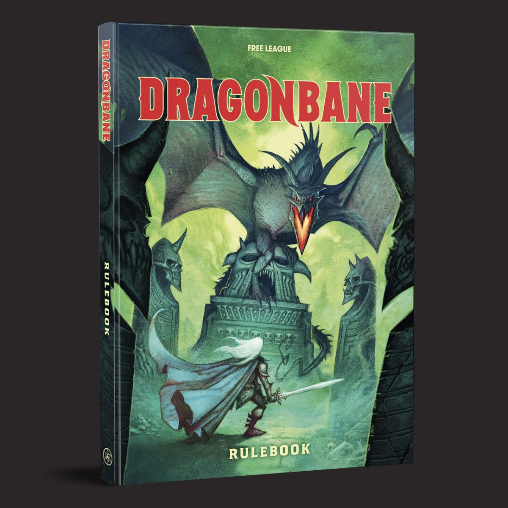
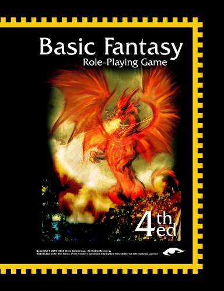

Dragonbane
Fast, adventurous fantasy with dangerous monsters, quick combat, and a healthy sense of humor. Great for exploring ruins and getting into trouble.
Explore game →A few tabletop roleplaying games I'm interested in running. Take a look and see what sounds fun.

Fast, adventurous fantasy with dangerous monsters, quick combat, and a healthy sense of humor. Great for exploring ruins and getting into trouble.
Explore game →
Classic dungeon crawling and wilderness exploration, where creative problem-solving, treasure hunting, and player choices drive the adventure.
Explore game →